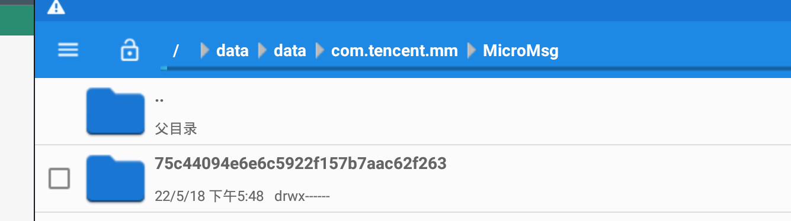
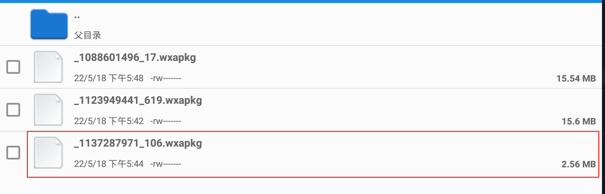
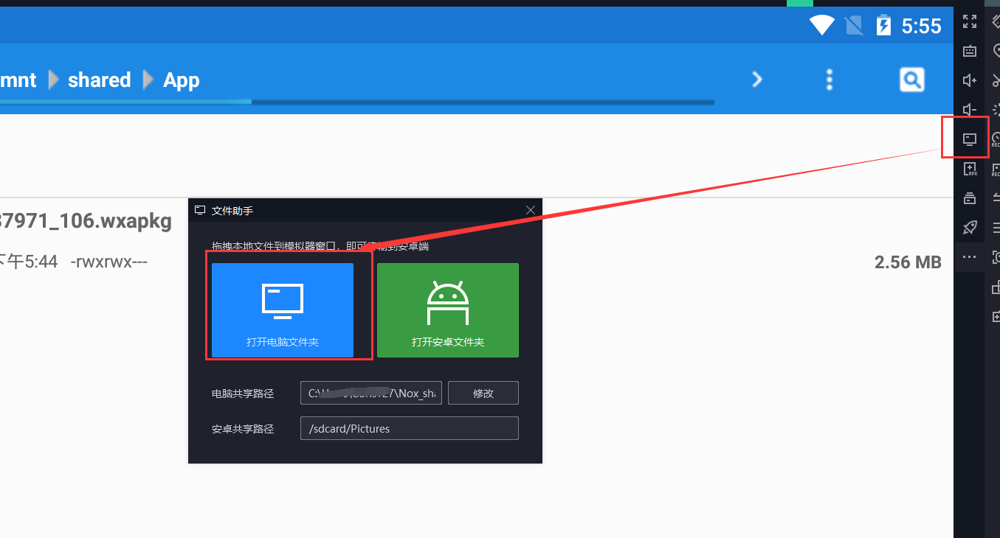
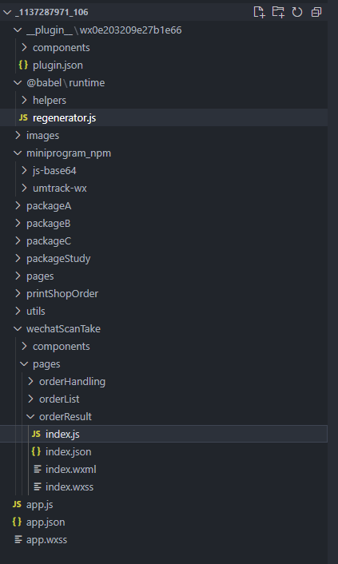
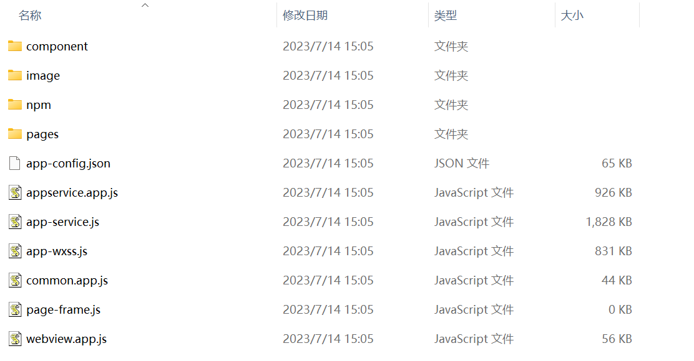

微信小程序渗透
目录
小程序抓包
clash+burp
clash+burp，详细参考公众号渗透，一样的
安卓模拟器逆向（windows）
夜神模拟器6.6.1.1，安卓版本5.0，抓包比高版本更加方便 ref:https://forum.butian.net/share/1227
链接：https://pan.baidu.com/s/1vMVvmm2n2wyr3vhzp91iqA
提取码：jpho
抓包+对小程序源码进行反编译从而进行审计
先把夜神模拟器（6.6等老版本）+burp配好，大量参考自ref：https://forum.butian.net/share/1227微信对于Mac和Windows的小程序包都做了不同程度的加密，所以现在从安卓/iOS系统中提取小程序更为方便。
然后随便访问一个小程序，接下来会在手机data/data/com.tencent.mm/MicroMsg生成一个md5加密命名的文件夹（如果打开微信小程序过多，同时有多个文件夹不容易识别的情况，可以选择把MicroMsg文件夹所有内容删除掉，再去重新打开微信小程序，就会得到唯一一个MD5加密命名的文件夹啦）

在该文件夹下的appbrand/pkg目录下找到.wxapkg后缀结尾的文件，其中只有几MB大小的为刚刚打开的小程序的文件

点击勾选之后，来到根目录下的mnt/shared/App目录，打开右上角三个.的功能菜单选择粘贴选择项，将文件复制到该文件夹，然后进入共享文件夹

在共享文件夹下AppShare目录里即可找到共享出来的wxapkg文件。 然后用这个工具进行反编译。记得要先安装nodejs
https://github.com/ezshine/wxapkg-convertor/releases
把wxapkg拖进去就可以把源码反编译出来了。

抓包逆向（windows\&linux可用）
因为是直接在流量中截取源码，避免了本地的加密过程，更加方便快捷，同事说可以解90%以上的小程序
1.clash开启tun mode，system proxy和service mode
2.配置好clash配置文件，把微信的流量导到burp或者whistle
proxies:
- name: burp
type: http
server: 127.0.0.1
port: 8080 #根据抓包工具配置
proxy-groups:
- name: Proxy
proxies:
- burp
type: select
rules:
- PROCESS-NAME,node.exe,DIRECT
- PROCESS-NAME,WeChatAppEx.exe,burp
- PROCESS-NAME,WeChat.exe,burp
- PROCESS-NAME,WechatBrowser.exe,burp
- MATCH,DIRECT
proxies:
- name: Whistle
type: http
server: 127.0.0.1
port: 8899 #根据抓包工具配置
proxy-groups:
- name: Proxy
proxies:
- Whistle
type: select
rules:
- PROCESS-NAME,node.exe,DIRECT
- PROCESS-NAME,WeChatAppEx.exe,Whistle
- PROCESS-NAME,WeChat.exe,Whistle
- PROCESS-NAME,WechatBrowser.exe,Whistle
- MATCH,DIRECT
3.抓res.servicewechat.com 的流量包
1/2理论上可以用proxifier完成，但是实际情况是很难用不推荐
# 小程序下载请求形式如下
https://res.servicewechat.com/weapp/release_encrypt/69_XEb_bQn9udUfYNR-JhVrzjVqEdXICHsvegO2QCx6eRfFnUgifLzEh55WQ2gYz7lUGvcPGgF-j0NRGfdI.wxapkg?rand=1419492810&pass_key=3B0wUf6vtegibGza4UIFk-JgzYJ8xt8YzNpCYtSAAy9fXw5rtUEMDGv28x9pauh5OX_iiUbTf_vg5ycoY2M_j-yhuPYMsfLw8DbfVczLXIK-UVFkxB12TKSGj_EdZFM6pbooi9Dowzw44GZmS9rkZa42d2nZXVqok480-xideVzqbA1VPb77cCo_HfxD3G9ejrc7T1tpGghnrUtG01dg_hX_tgS9HUkKLPqElBTC5_Y~&ext_code=_bKqDGB7WZQDjN8kGrx9kJE7OgfsMfnH1M-wfX0ThiE
测试版请求长这样
https://servicewechat.com/weapp-test/experience/BXY4PweVMcpJVNkQOv_kKYjot6AWWPZCGAQTMV26mcw
burp需在proxy过滤器里添加other binary可见 whistle需在顶部栏中的https选项里开启Capture TUNNEL CONNECTS
4.获取路由后，直接把url放到浏览器进行下载
下载包有时存在多种格式，若后缀为wxapkg可直接用，若后缀为zstd，则需要使用zstd方式解压后添加wxapkg后缀再使用。测试版下下来加个wxapkg也能直接用
windows可以用Bandizip等解压
unix可以用zstd指令解压
zstd -d [压缩文件路径] -o [输出文件路径]
解压出来后添加wxapkg后缀
5.解压wxapkg文件获取源码
https://github.com/zwl55555/wxappUnpacker-master
- * windows系统使用:
./bingo.bat testpkg/master-xxx.wxapkg- Linux系统使用:
./bingo.sh testpkg/master-xxx.wxapkg
- Linux系统使用:
- 解包子包go
- windows系统使用:
./bingo.bat testpkg/sub-1-xxx.wxapkg -s=../master-xxx - Linux系统使用:
./bingo.sh testpkg/sub-1-xxx.wxapkg -s=../master-xxx
- windows系统使用:
解出来了

源码分析
通过linkfinder找路由
https://github.com/GerbenJavado/LinkFinder
python linkfinder.py -i 'path-to-wxapkg/**/*.js'
linkfinder递归查询js文件好像不支持，写了个脚本递归查询当前目录下的所有js并放入output文件夹,重名文件会在前面编号1234567...
```bash
#!/bin/bash
# 获取命令行参数
while getopts "i:o:" opt; do
case $opt in
i)
input_dir=$OPTARG
;;
o)
output_dir=$OPTARG
;;
\?)
echo "Invalid option: -$OPTARG" >&2
exit 1
;;
esac
done
# 检查输入参数是否为空
if [ -z "$input_dir" ] || [ -z "$output_dir" ]; then
echo "Usage: $0 -i input_dir -o output_dir"
exit 1
fi
# 创建输出目录
mkdir -p "$output_dir"
# 递归查询js文件并复制到输出目录
counter=1
find "$input_dir" -type f -name "*.js" | while read -r file; do
filename=$(basename "$file")
new_filename="$filename"
output_file="$output_dir/$new_filename"
# 检查是否存在同名文件
while [ -e "$output_file" ]; do
new_filename="${counter}_${filename}"
output_file="$output_dir/$new_filename"
counter=$((counter + 1))
done
cp "$file" "$output_file"
echo "Copied $file to $output_file"
done
```
你可以将上述脚本保存为一个名为`copy_js_files.sh`的文件，并在终端中运行以下命令来执行脚本：
```bash
bash copy_js_files.sh -i /path/to/input_dir -o /path/to/output_dir
```
请将`/path/to/input_dir`替换为你要递归查询js文件的目录路径，将`/path/to/output_dir`替换为你要将js文件复制到的目录路径。
看源码找漏洞
通过linkfinder获得了很多接口，可以找找敏感关键字如login，password
找到感兴趣的路由后，用vscode打开源码，定位到路由，看看接口详情并测试是否有未授权. 有可能会遇到js巨乱的情况，用这个插件搞定Prettier - Code formatter ctrl+shift+p 输入 format document进行格式化
AppSecret泄漏
小程序抓包的坑
clash+burp或者clash+whistle足以
有时候会遇到链接代理后，微信小程序打不开的情况。解决方案如下
1.设置→文件管理→查看微信文件保存位置是不是本地文件路径，如果是网络共享路径就有可能抓不到包。（我arm windows的微信文件保存路径就是mac的smb共享，导致一连clash小程序就会空白）
2.设置→文件管理→打开微信文件保存位置，关闭微信，删除applet文件夹和msg下的applet.db文件，重启微信。这俩东西是微信小程序的缓存。
3.来自微信开发者社区：搜索栏输入:showcmdwnd，复制代码/plugin set_grayvalue=101\&set_config_url=https://dldir1.qq.com/weixin/Windows/XPlugin/updateConfigWin.xml\&check_update_force，关闭微信，重新打开微信登陆
4.来自微信开发者社区：任务管理器->找到小程序的缓存目录，退出微信，删掉目录重新进入就好了。一般目录地址在：C:\Users\{user}\AppData\Roaming\Tencent\WeChat\XPlugin\Plugins\WMPFRuntime
5.更多来自微信开发者社区的解决办法：https://developers.weixin.qq.com/community/develop/doc/0008ee93caccd0a92f9ee17a051c00